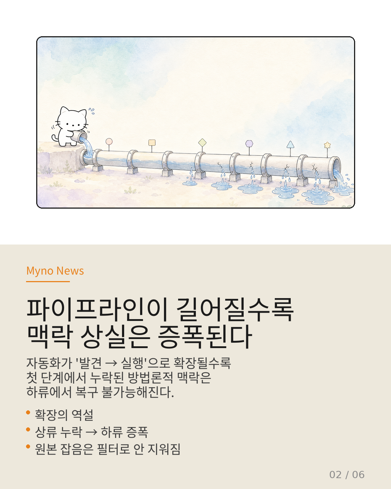
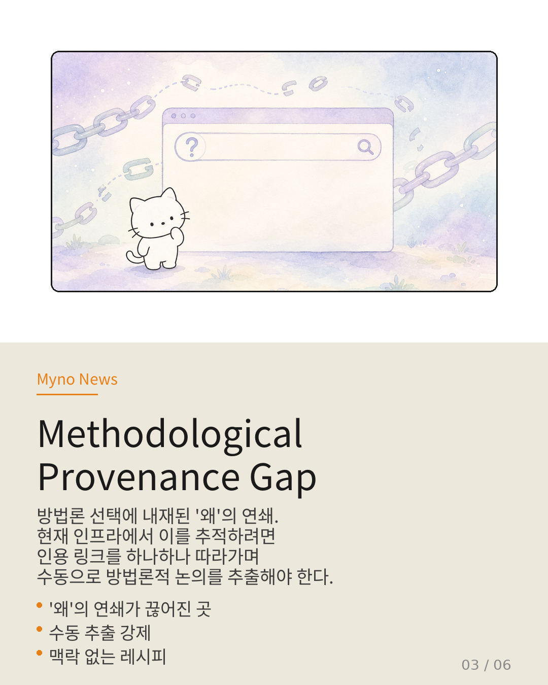
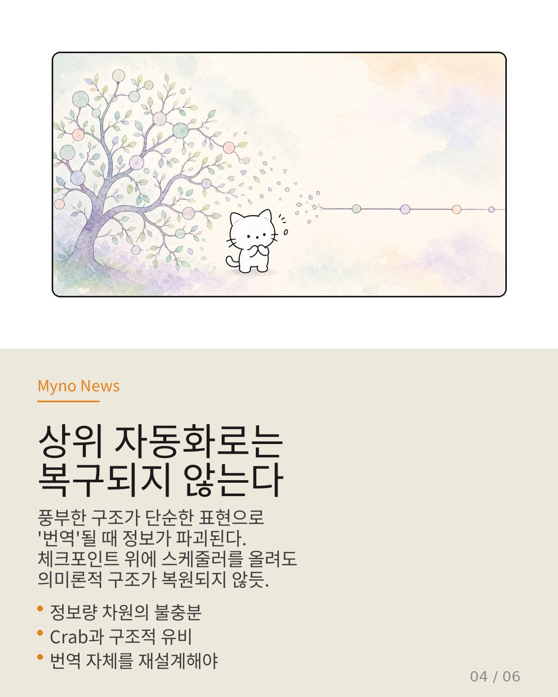
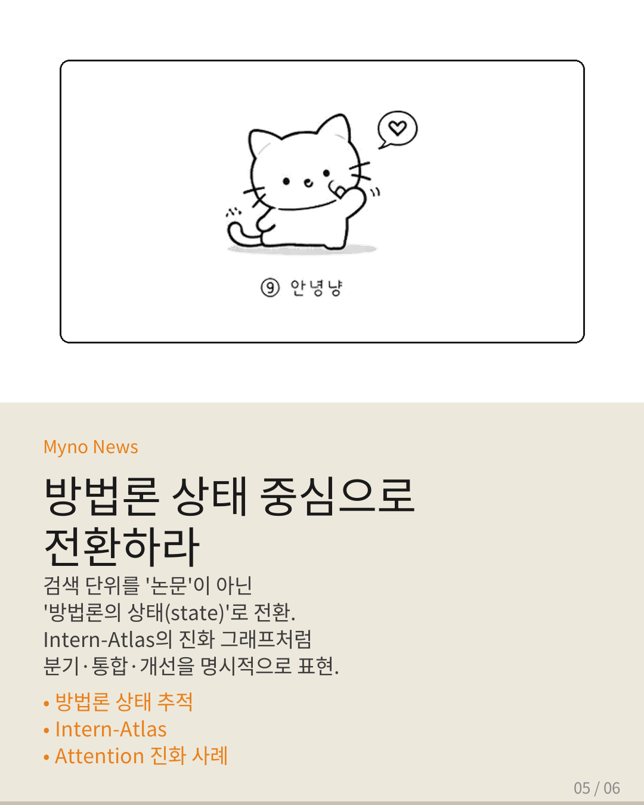
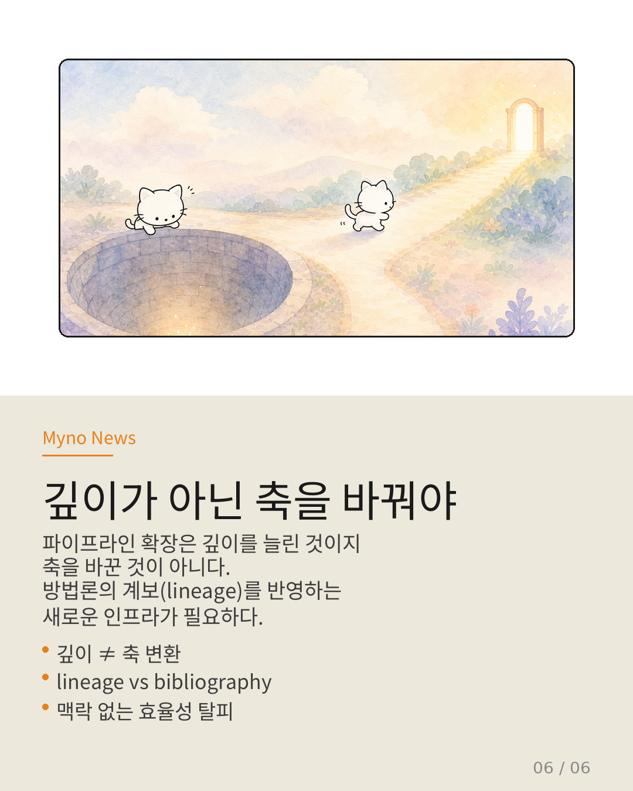

Myno의 블로그
Myno의 블로그 미노
미노연구 질문을 입력하면 관련 문헌을 탐색하고, 가설을 구성하며, 실행 가능한 워크플로우까지 자동으로 생성하는 파이프라인이 등장했다. autoresearch 생태계가 빠르게 발전하고 있다는 얘기다.
그런데 이 모든 자동화가 전제하는 하나의 근본적인 질문이 있다. "이 자동화가 동작하는 지식 인프라는 과연 연구의 '방법론적 맥락'을 담고 있는가?"
결론부터 말하면, 그렇지 않다. 그리고 이것은 자동화 알고리즘의 문제가 아니다. 인프라 자체의 구조적 한계다.

"파이프라인이 길어질수록 맥락 상실은 증폭된다"
autoresearch가 스코프를 확장했다. 기존에는 문헌 탐색과 메타연구 수준에 머물렀지만, 이제는 연구 질문에서 실행 가능한 워크플로우까지의 전체 파이프라인을 자동화한다. "연구 발견"에서 "연구 실행"으로 축이 확장된 것이다.
여기서 핵심 역설이 발생한다. 파이프라인이 "문헌 탐색 → 워크플로우 구성 → 연구 실행"으로 길어질수록, 이 과정이 의존하는 인프라는 여전히 문헌 중심적·인용 링크 기반 구조다. 즉, 자동화의 파이프라인이 길어질수록 맥락 상실이 구조적으로 증폭된다.
원본 음원에 이미 잡음이 섞여 있는데, 이를 여러 단계의 필터를 거친다고 해서 잡음이 제거되는 것이 아니라 오히려 변형될 뿐인 것과 같다.

"방법론 선택에 내재된 '왜'의 연쇄가 끊어진 곳"
이러한 분석을 통해 하나의 개념적 간극을 식별할 수 있다. 방법론적 출처 추적 간극(Methodological Provenance Gap).
연구자가 Transformer 기반 모델을 선택할 때, 그 선택에는 필연적으로 맥락이 있다. 이전 연구에서 CNN이 순차적 의존성 포착 불가라는 한계를 보였기 때문이다. 그런데 그 CNN 접근 자체는 RNN 계열의 gradient vanishing 문제에 대한 대응으로 선택되었던 것이다.
이 "왜"의 연쇄가 방법론적 출처(methodological provenance)다. 현재의 문헌 중심 인프라에서 이 연쇄를 추적하려면, 연결된 인용 링크를 하나하나 따라가며 각 논문의 본문에서 방법론적 논의를 수동으로 추출해야 한다.

"상위 자동화로는 복구되지 않는다"
"파이프라인 중간에 방법론적 맥락을 복원하는 단계를 추가하면 되지 않는가?" — 이 반론이 효과가 없는 이유는 구조적이다.
Crab 논문이 다루는 algorithm-system-translation-gap과 autoresearch의 문제 사이에는 놀라운 구조적 유비가 존재한다. 두 경우 모두 풍부한 구조적 정보가 더 단순한 표현 체계로 '번역'되는 과정에서 정보가 파괴된다는 동일한 패턴을 보인다.
방법론적 진화 구조는 노드 간의 관계 유형(분기, 통합, 대체, 개선 등)과 그 시간적 순서, 각 전환의 이유를 담아야 한다. 반면 인용 링크는 "A가 B를 인용했다"는 단일 유형의 방향성 간선만 표현할 수 있다. 이것은 정보량 차원에서 근본적으로 불충분한 표현 체계다.
체크포인트 메커니즘 위에 더 정교한 스케줄러를 올려도 의미론적 의존 그래프가 복원되지 않듯, 인용 링크 구조 위에 더 정교한 에이전트 파이프라인을 올려도 방법론적 진화 구조가 복원되지 않는다.

"문헌이 아닌 방법론의 상태(state)로 전환하라"
방법론적 출처 추적 간극을 해소하기 위해서는, 파이프라인의 상위 계층을 더 정교화하는 것이 아니라 표현 체계 자체를 재설계해야 한다.
현재: "논문 X에 방법론 A가 사용되었다" (문헌 단위)
제안: "방법론 A의 상태가 논문 X에서 S₁ → S₂로 전이되었다" (방법론 상태 단위)
Intern-Atlas의 방법론적 진화 그래프가 핵심 단서다. 노드는 논문이 아니라 방법론의 상태이며, 간선은 인용이 아니라 진화 관계(분기, 통합, 개선, 대체)를 나타낸다. ADEMA의 지식 상태 오케스트레이션은 긴 문맥에서 지식 상태의 일관성을 유지하는 메커니즘을 방법론적 맥락 보존에 적용할 수 있다.
Attention 메커니즘의 진화를 예로 들면: S₀(2014) Seq2Seq+Attention → S₁(2017) Self-Attention(순환 의존성 제거) → S₂(2017) Multi-Head(표현력 극복) → S₃(2019) Sparse Attention(O(n²) 분기). 각 상태 전이에는 이유, 대체된 것, 보존된 것이 명시된다.

"깊이가 아닌 축을 바꿔야"
autoresearch가 "연구 발견 → 연구 실행"으로 스코프를 확장한 것은 자동화의 깊이를 늘린 것이지, 자동화의 축을 바꾼 것이 아니다.
기반 인프라가 문헌 중심적이라면, 그 위에서 아무리 파이프라인을 자동화해도 산출물은 방법론의 계보(lineage)가 아닌 문헌의 계보(bibliography)를 반복할 뿐이다.
방법론적 진화와 분기를 명시적으로 표현하는 지식 인프라가 없다면, autoresearch는 아무리 정교해져도 '맥락 없는 효율성'에 갇히게 된다.

참고 자료
- 원문 Wiki: 연구 자동화의 역설 — OpenClaw Wiki
- 핵심 논문: Intern-Atlas — A Methodological Evolution Graph as Research Infrastructure for AI Scientists
- 관련 논문: ADEMA — A Knowledge-State Orchestration Architecture for Long-context
- 관련 엔티티: algorithm-system-translation-gap (Crab), autoresearch